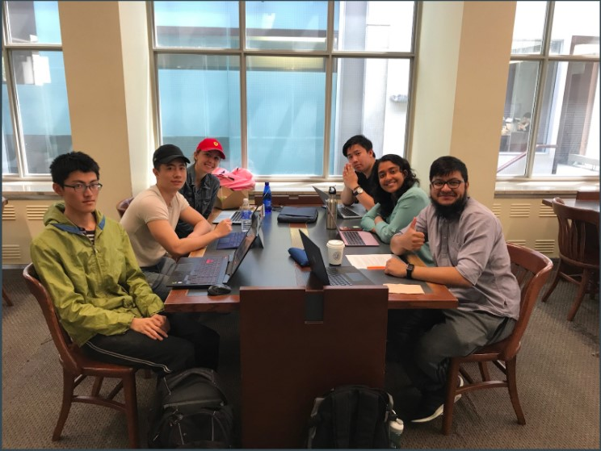

Tanvir Khan
East York, ON
Phone# 6479751902
Email:tkhan492@gmail.com

Dedicated professional with experience in business administration, customer relations and support. Effectively contributes towards organizational success, leads cross-functional teams with determination, professionally deals with increased challenges and responsibilites
Highest Level of Education: Bachelor's Degree
LinkedIn
Work Experience
Office Administrator/HR Support
November 2020 to Present
General administrative duties including reception, filing, organizing documents etc
Training documentation and support
New hire documentation review and uniform issue
Completing inventory audits including uniform returns
Assisting in various sections of the onboarding process of new hires
Maintaining and updating employee files when required and maintaining logs
Scheduling Support
Covering scheduling absences
GIS Trainee
Geo-Planning for Advanced Development (GPAD) Training Center - Dhaka, Bangladesh
March 2020 to September 2020
Successfully familiarize with ArcGIS components such as ArcCatalog and ArcMap
Mastered the basic GIS concepts such as adding data, georeferencing, digitizing features, editing vertices, and symbolizing the feature layer
Work with team members to perform analysis using various geoprocessing tools
Acquire skills in data joining and editing data conversion from KML to Shapefile, filtering tables, and creating basic maps and layouts in ArcMap.
Front Line Associate
Recipe Unlimited Corporation - Toronto, ON
September 2011 to June 2019
Deliver exceptional service by always greeting each table with a smile, in a timely manner, and checking back frequently
Recommend menu items based on customer needs and preferences, including upselling daily food and drink specials
Consistently provide friendliness and likable personality traits, as demonstrated by satisfying many customers to leave convincing feedbacks to managers
Assist management in budgeting and sale forecasting for the upcoming year, along with implementing steps in order to reach those goals
Organizational abilities such as find files and phone numbers at a moment's notice and maintain a tidy work area.
Group Projects
Monitoring Forest Fires in Alberta & British Columbia

May 2019 to June 2019
This final group project from Environmental Remote Sensing course, have trained me how remote sensing utilizes satellite/airborne based sensors to collect information about a given area, and to understand the behaviour of wildfire spread across province of Alberta and whole Canada. During the presentation, I have discussed the different electromagnetic spectrum and the interaction of electromagnetic radiation with the atmosphere that helped acquire maps and images of forests and water bodies. Also discussed how poor fire-management practice is bringing destruction to the forest ecosystem.
View Presentation
View Report
Socio-economic comparisons between ICIMOD countries to address gender disparities
September 2018 to April 2019
This Cohort Capstone Project serves as a preliminary analysis for a comparative study on the socioeconomic data from Hindu Kush Himalayan (HKH) countries on all municipal, provincial and national levels that cover general demographic information as well as gender inequalities. Project focuses on data from Nepal and Bangladesh in comparison to data collected from Canada. It addresses the commonalities and differences between results from the studied countries.
Click to View Capstone Project Report"